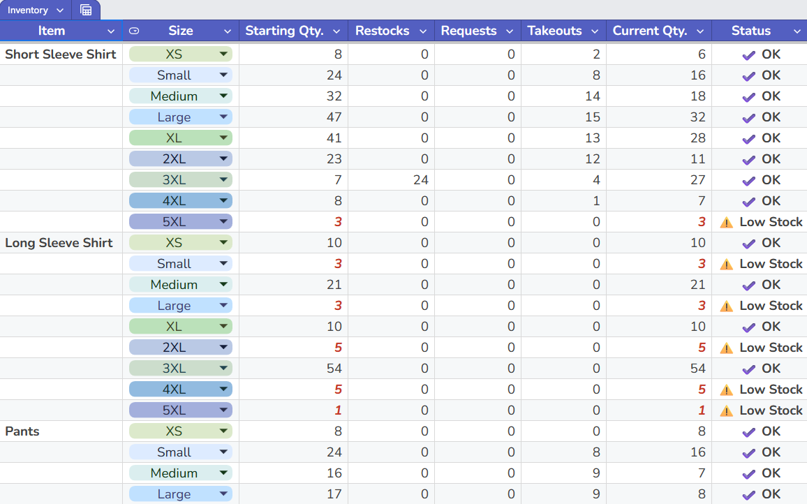
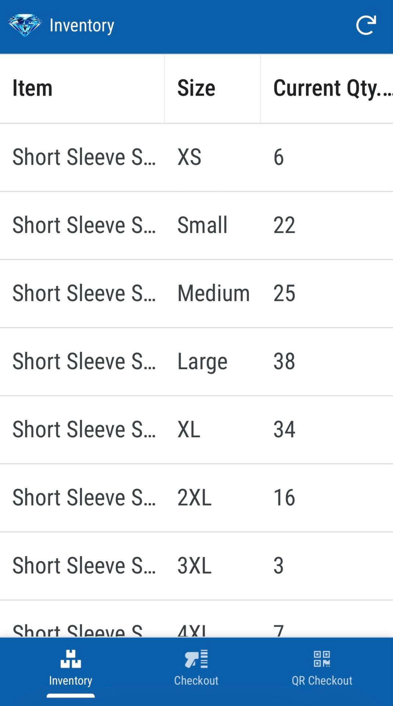
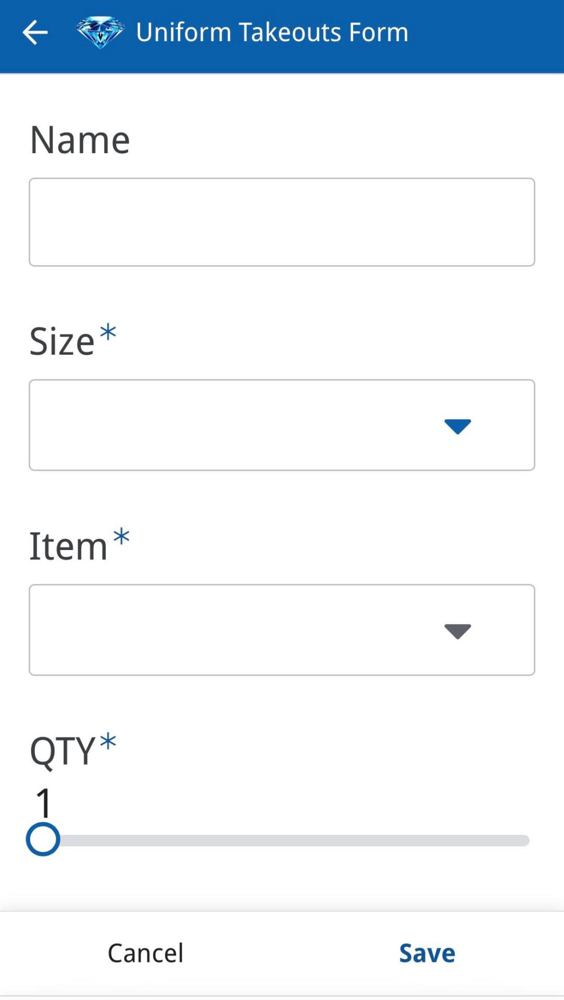
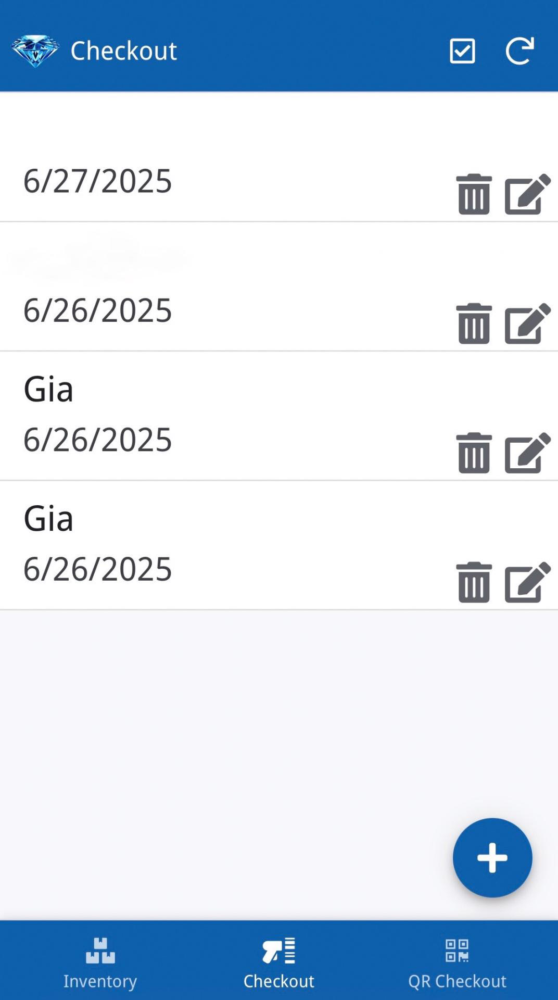

Uniform Inventory Tracking
2025Skills: ChatGPT · Google Apps Script · AppSheet · Google Sheets · QR
The problem: Uniform checkout was manual and error-prone — no real-time visibility into stock levels or who took what.
What I built: A Google Sheets tracker with automated low-stock email alerts, a mobile AppSheet app for QR-based checkouts, and a Python script (written with ChatGPT) to generate printable QR labels.
How I used AI: ChatGPT helped write and debug Apps Script and Python. I defined the workflow and requirements; AI accelerated the code and documentation.
Outcome: Employees scan and submit takeouts from the uniform room. Admin staff get live inventory oversight and alerts before items run out.

AppSheet mobile app


